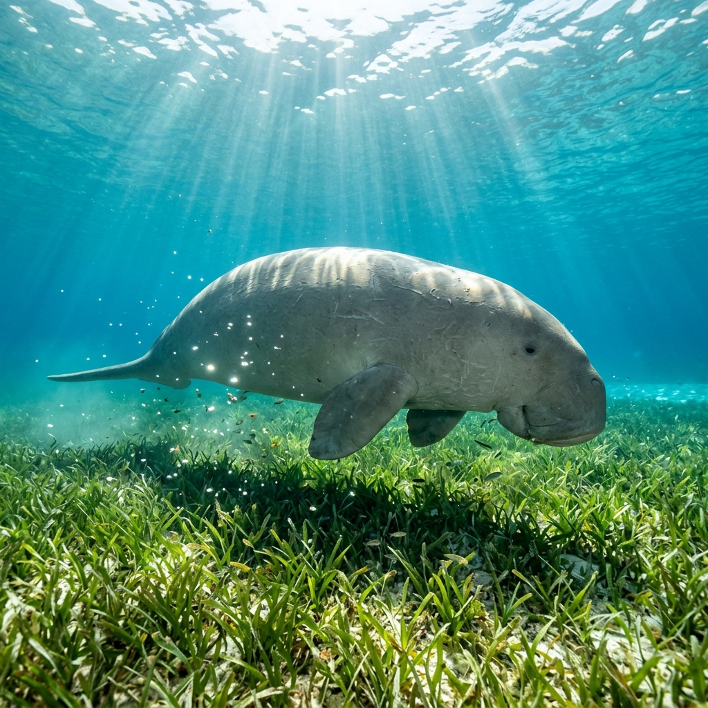

Jaga Dugong
Di Laut Dalam.
Bantu kami melindungi populasi pesut laut yang tersisa dan memulihkan padang lamun di perairan Aceh. Masa depan mereka ada di tangan kita.
Vulnerable
Status konservasi global (IUCN). Populasi terus menurun.
40 Kg
Konsumsi lamun harian oleh satu individu dugong dewasa.
Ancaman
Terjerat jaring dan tertabrak kapal adalah penyebab utama kematian.
Tentang Inisiatif Kami
Menjaga Warisan Pesisir Aceh Darussalam
Dugong Natural Aceh Corp lahir dari keprihatinan mendalam atas semakin menurunnya populasi dugong dan menyusutnya habitat padang lamun di wilayah pesisir Aceh. Kami adalah koalisi independen yang terdiri dari peneliti, aktivis lingkungan, dan masyarakat pesisir lokal.
Bagi kami, dugong bukan sekadar hewan laut yang terancam punah. Mereka adalah spesies kunci menjaga keseimbangan ekosistem laut purba. Keberadaan mereka sangat erat kaitannya dengan ketersediaan ikan yang menjadi urat nadi kehidupan nelayan tradisional Aceh.
Visi
Mewujudkan perairan Aceh sebagai benteng terakhir perlindungan dugong and padang lamun yang lestari di Sumatra.
Misi
Memadukan riset ilmiah dengan kearifan lokal Hukum Adat Laot dalam upaya konservasi laut secara partisipatif.
Kolaborasi Penggerak
Natural Aceh
LSM lokal di Aceh yang aktif mendampingi masyarakat pesisir, mengedukasi pelestarian lingkungan laut, serta mengadvokasi kearifan adat laut setempat.
Yayasan KEHATI
Yayasan Keanekaragaman Hayati Indonesia yang mendukung pendanaan mandiri untuk perlindungan kekayaan hayati di berbagai wilayah Indonesia.
Riset & Data Terbuka
Mengumpulkan data ekologi presisi tinggi sebagai dasar pengambilan kebijakan zonasi laut.
Pemberdayaan Nelayan
Bekerja erat dengan Panglima Laot untuk mensosialisasikan penangkapan ikan ramah lingkungan.
Advokasi Regulasi
Mendorong terciptanya Kawasan Konservasi Perairan Daerah (KKPD) yang terpadu.
Kenali Ekosistem
Simbiosis Dugong & Lamun
Spesies Kunci Pembawa Keseimbangan
Dugong (Dugong dugon) adalah mamalia laut unik, satu-satunya herbivora murni di lautan. Mereka sering disebut "sapi laut" karena menghabiskan waktunya merumput di padang lamun.
Keberadaan mereka bergantung pada padang lamun yang sehat. Saat makan, mereka mengaduk dasar laut, membantu menyebarkan bibit lamun dan menyuburkan area sekitarnya.
Mengapa Lamun Penting?
- Karbon Biru: Menyerap karbon 35x lebih cepat dari hutan tropis.
- Pembibitan: Tempat berlindung ikan karang bernilai ekonomi.
- Pelindung Pantai: Meredam ombak dan mencegah abrasi.
Habitat Dangkal
Padang Lamun
Siklus Lambat
Ancaman Manusia
Aksi Nyata & Perlindungan
Program Kerja & Misi Kami
Patroli & Monitoring
Pemantauan langsung kawasan padang lamun bersama kelompok nelayan lokal guna mencatat populasi dugong, mendeteksi ancaman, serta mencegah aktivitas penangkapan ikan yang merusak lingkungan.
Restorasi Padang Lamun
Upaya rehabilitasi kawasan pesisir yang rusak melalui transplantasi lamun jenis pionir secara berkala, memastikan kelangsungan hidup ekosistem laut dan ketersediaan pakan dugong.
Edukasi & Adat Panglima Laot
Pelatihan berkala bagi nelayan tentang cara menangani dugong yang terjerat jaring secara aman, dipadukan dengan sosialisasi aturan adat laut lokal demi meminimalkan kematian dugong.
MEDIA SOSIAL
Galeri Instagram
Lapor Penampakan
Melihat dugong hidup, terluka, atau terdampar mati? Laporan cepat Anda sangat berarti bagi penyelamatan mereka.